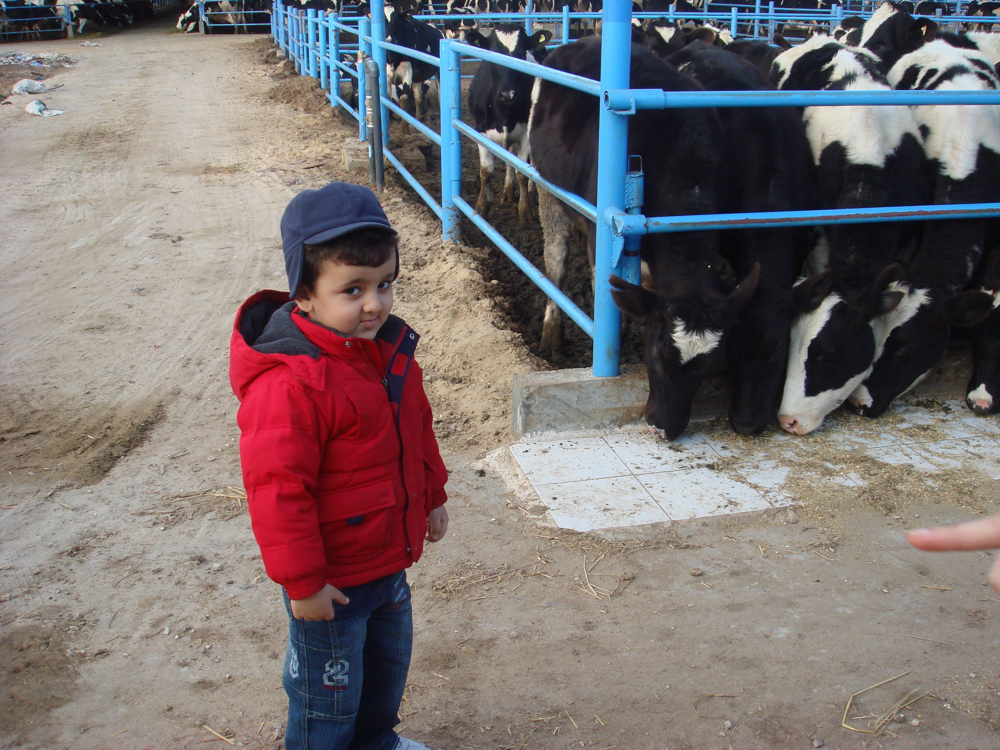

Mahmoud Sherif Elbahkiry
Computer science student

Highly motivated and skilled Computer Science student with a passion for software development, seeking opportunities to contribute innovative solutions in the tech industry.
Skills:
- Kotlin (android)
- C++
- Python
- Microsoft office
- Flutter (multi-platform)
Education:
Coventry University (Current)
- Pursuing Bachelor's degree in Computer Science
- 2021 - 2025
Egypt British International School
-
Completed secondary education with a focus on computer science, mathematics, and physics, laying a solid foundation for academic and technical growth.
- 2008 - 2020
Experience:
Android Development
- With 10+ demo apps, I craft innovative, user-friendly software for exceptional user experiences.
App Marketing
-
I completed Dr. Angela Yu's app marketing course, gaining insights and skills to promote mobile apps effectively in a competitive market.
Flutter Development
-
Experienced in Flutter development, I've contributed to various projects, demonstrating effective teamwork and proficiency in creating robust applications.
Contact:
- mahmoudelbahkiry@hotmail.com
- 01020855850